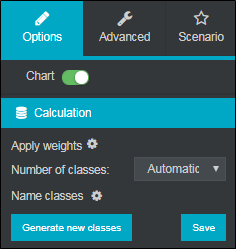
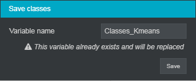
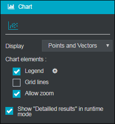

Perform a K-means classification
The K-means classification (automatic) makes it possible to decompose a set of individuals into a number n of classes chosen a priori. It is an iterative process that successively produces several solutions while always maintaining the best.
The automatic classification amounts to entrusting the data processing software with the task of gradually placing the class centers, so that they produce a typology that discriminates as well as possible the groups thus composed.
EXAMPLE: In a survey on tourism we want to create a typology according to the perception of ideal holidays.

In order to achieve a K-means classification, proceed as follows:
-
Click on the
 button.
button. -
Select advanced analysis.
-
Click onK-means classification.
-
Make a drag and drop of the variables to be analyzed from the list of available variables.

Once the K-means classification is created, it is possible to change the variables by selecting the analysis and clicking  or by right-clicking edit on the analysis.
or by right-clicking edit on the analysis.
 OPTIONS AND ANALYSIS OF K-MEANS CLASSIFICATION
OPTIONS AND ANALYSIS OF K-MEANS CLASSIFICATION
In the options tab, calculation category, you can choose a scale and define the number of classes.

-
Number of classes: The number of classes is defined automatically, but it is possible to modify it, to do this: Click on the drop-down menu, select the fixed option, define the number of classes and click on the Generate new classes button.
-
Name classes: To name the classes click on
 and enter the names.
and enter the names.

-
Generate a closed variable containing the created classes by clicking on the Save button.


-
Choose to display the Points and Vectors or only the Points on the chart.
-
Zoom in on some parts to get a closer look at an interesting area while previewing. To do this, check the Allow zoom box.

In the preview, place the cursor on a part of the map, click and drag around the area to be zoomed. Then it will be possible to cancel the zoom by clicking on the  button.
button.
It is possible to display more analyzes concerning the analysis modalities by selecting the detailed results tab below the map. These can be exported to Excel from the tab  .
.

The statistical results can be displayed during the preview by selecting Show «Detailed results» in runtime mode in the chart elements.


The numerical and statistical elements that make it possible to interpret the classification and to evaluate its quality:
-
The characteristics of variables gives the distribution of individuals in each group and the variables that characterize the classes.
-
The Classification quality indicators recall the distribution of the numbers between classes and their homogeneity.
-
The detail of classes indicates the average values of the classes on each variable included in the analysis. The green and red colors identify over-representations and under-representations.